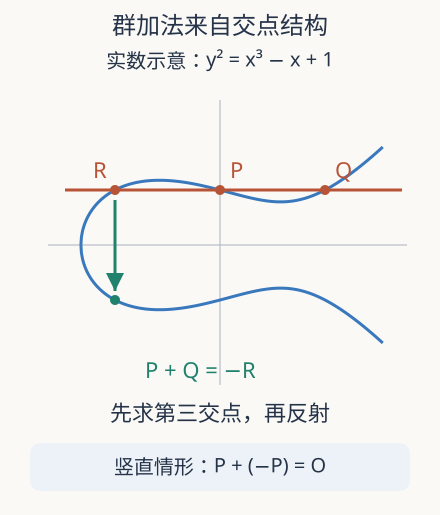

本页目录
数论桥梁 02 · 割线、切线与扭点：方程的解为什么能相加
一组方程解原本只是集合。怎样给它加法，而且每次相加仍得到解？先修有限域计数与群。本讲把几何构造变成可执行的有限域代数，再解释通往 Galois 表示还缺什么。
1. 不是把两个坐标分别相加
若 \(P=(x_1,y_1)\)、\(Q=(x_2,y_2)\) 都满足 \(y^2=x^3+ax+b\)，通常 \((x_1+x_2,y_1+y_2)\) 并不满足同一个方程。因此“解构成群”需要新的加法。设曲线光滑，所在域的特征不为 2、3，并把射影点 \(O\) 选作单位元。
在实数图像上，先画过 \(P,Q\) 的直线。它与三次曲线的第三个交点记为 \(R\)，再关于横轴反射，定义 \(P+Q=-R\)。当两点重合时，直线换成切线；当直线竖直时，和是 \(O\)。这些约定不是任意补丁：它们把重根和射影交点一起算入“直线与三次曲线交三次”的结构。

2. 从三次方程抽出加法公式
假设 \(x_1\ne x_2\)，斜率是 \(\lambda=(y_2-y_1)/(x_2-x_1)\)，直线为 \(y=\lambda(x-x_1)+y_1\)。代回曲线，得到首项系数为 1 的三次多项式，\(x^2\) 系数为 \(-\lambda^2\)。由根与系数的关系，三个交点的横坐标满足
反射不改变横坐标，故
两点重合时，对 \(y^2=x^3+ax+b\) 隐式求导得 \(2y\,dy/dx=3x^2+a\)，于是切线斜率 \(\lambda=(3x_1^2+a)/(2y_1)\)。若 \(y_1=0\)，不能除零；此时 \(P=-P\)，应直接返回 \(2P=O\)。有限域没有通常的微小增量，但形式导数与切线仍有代数意义。
3. 模 17 的完整小算例
取 \(E:y^2=x^3+2x+2\)，模 17，\(P=(5,1)\)。因为 \(4\cdot2^3+27\cdot2^2\equiv4\ne0\)，曲线光滑。计算 \(2P\)：分子 \(3\cdot25+2\equiv9\)，分母 2 的逆元为 9，所以 \(\lambda\equiv9\cdot9\equiv13\)。随后
得到 \(2P=(6,3)\)。再与 \(P\) 相加，斜率是 \((3-1)/(6-5)=2\)，得到 \(3P=(10,6)\)。这里所有除法都指有限域逆元；把 \(1/2\) 当小数 0.5 输入程序会破坏运算。
穷举可数出该曲线含 \(O\) 共 19 点。群的拉格朗日定理说明非零点的阶整除 19，因此 \(P\) 的阶就是 19：\(19P=O\)，前 18 个倍点互不相同。于是 \(2P+3P=5P=(9,16)\)，而 \(18P=-P=(5,16)\)。两点横坐标相同只说明它们可能互为负点，不说明点相同。
4. 从“算得通”到“真的是群”
代数公式可直接检查封闭性、交换律和负点；最难的群公理是结合律。对几组点穷举成功不能代替一般证明。专业证明可以用除子：把点 \(P\) 送到度零除子类 \([P-O]\)，曲线上三点共线给出相应的主除子关系，于是几何加法与除子类群中的加法一致。后者的结合律来自阿贝尔群的定义，才解释为何两种括号一定给出同一点。
这里的“除子”先理解为点的整数线性组合，“主除子”记录有理函数的零点与极点及其重数。真正证明还需曲线函数域、Riemann–Roch 等先修。本讲给出证明的结构入口，而不是把一个陌生术语当作已经证明的黑箱。实数画图尤其不能控制所有有限域或切线重合的情形。
5. 扭点把非线性曲线变成线性表示
定义 \(E[n]=\{P:nP=O\}\)，称为 \(n\) 扭点。它们必须指明在哪个域上取点。在代数闭包上，若 \(n\) 与域特征互素，则 \(E[n]\cong(\mathbb Z/n\mathbb Z)^2\)；但这些 \(n^2\) 个点未必都定义在原来的有限域或有理数域上。我们的 \(E(\mathbb F_{17})\) 阶为 19，因此它没有非零的有理 2 扭点；代数闭包中仍有三个非零 2 扭点，对应三次多项式的三个不同根。
若曲线系数在 \(\mathbb Q\) 中，Galois 自同构会置换代数坐标，同时保留方程和群加法。选择 \(\ell^n\) 扭点的基后，这种作用变成一个可逆二乘二矩阵。沿 \(n\) 兼容地取极限，就进入第四讲的 Tate 模。研究群运算的意义因此超出“更快求解”：它创造了把数域对称性放进线性代数的接口。
快速倍点与异常分支
若要算 \(13P\)，逐次加十三次没有利用整数的结构。写 \(13=8+4+1\)，先算 \(2P\)、\(4P\)、\(8P\)，再合并 \(8P+4P+P\)。一般整数的二进制展开使倍点次数与二进制位数同量级；这解释了标量乘法为什么可以高效执行，但并没有给出从 \(P,Q=nP\) 反求 \(n\) 的同样快速方法。正向运算与逆问题的难度必须分别研究，尤其不能由这个 19 点小群外推出密码系统的安全性。
实现中最危险的步骤往往是一个分母，而不是一长串乘法。同横坐标的两个曲线点，在特征不为 2 时要么相等，要么互为负点；后者先返回 \(O\)，前者再进入切线分支。若它们既相等又互为负点，就是 \(y=0\) 的 2 扭点，仍返回 \(O\)。把这些情形放在求逆之前，才能避免把数学中不存在的逆元交给小数除法处理。
还有一个独立核对方法：将获得的每个倍点重新代入曲线方程，确认封闭性，再把整条倍点轨道与第一讲的全点表比较。在本例中，十八个非零点加 \(O\) 正好覆盖全部点。如果只有横坐标集合覆盖，并不够；两条反射分支可能被程序错误合并。下一讲格子商空间的加法会让结合律更直观，但有限域实例仍应保留这类完整坐标检验。
6. 实验：重复横坐标是否意味着重复点
先预测 \(m=2,n=3\) 的结果，再改变正负整数。观察 \(jP\) 的横坐标随 \(j\) 跳动，并检查 \(j\) 与 \(19-j\) 的配对。零元没有仿射坐标，图中不为 \(19P\) 伪造高度。
交互后备：固定曲线与 \(P=(5,1)\)，用斜率公式算 \(2P\)、\(3P\) 与它们的和；所有运算模 17。
默认静态结果：\(2P=(6,3)\)，\(3P=(10,6)\)，\(2P+3P=(9,16)=5P\)。群阶 19，\(19P=O\)。这张小表是可穷举实例，不是一般群公理的证明。
7. 迁移题
题一。 在特征不为 2 的短 Weierstrass 曲线上，仿射点为何是非零 2 扭点当且仅当 \(y=0\)？
独立作答后核对
\(2P=O\) 等价于 \(P=-P\)。负点为 \((x,-y)\)，所以 \(2y=0\)，从而 \(y=0\)；反过来同样成立。光滑性保证三次多项式在代数闭包中没有重根，因此恰有三个这样的非零点。
题二。 已知某曲线有限点群有 12 个元素，一个非零点是否必为 12 阶？知道横坐标重复是否足以算出点阶？
独立作答后核对
不必；阶可以是 12 的其他因数。必须找到最小正整数 \(n\) 使 \(nP=O\)。横坐标重复可能只是 \(jP=-kP\)，尚未返回同一个点；应比较完整点并单独处理 \(O\)。本讲 19 阶结论使用了 19 是素数这一条件。
速查与研究入口
| 情形 | 运算 | 不可遗漏 |
|---|---|---|
| 异横坐标 | 割线斜率，再求第三交点并反射 | 分母取域逆元 |
| 倍点 | \(\lambda=(3x^2+a)/(2y)\) | \(y=0\) 时返回 \(O\) |
| 扭点 | \(E[n]\cong(\mathbb Z/n)^2\) | 代数闭包上且特征不整除 \(n\) |
下一讲：格子与模形式。资料实际访问 2026-09-08：Sutherland，2023 第 2、4–6、23 讲；Milne，2020 第二版；Derickx–Najman–Siksek，全实三次域椭圆曲线的模性，首稿 2019-01-11、期刊 2020。后者展示扭点与模曲线方法的研究用途；不能从一个模 17 群推广出所有数域上的模性。